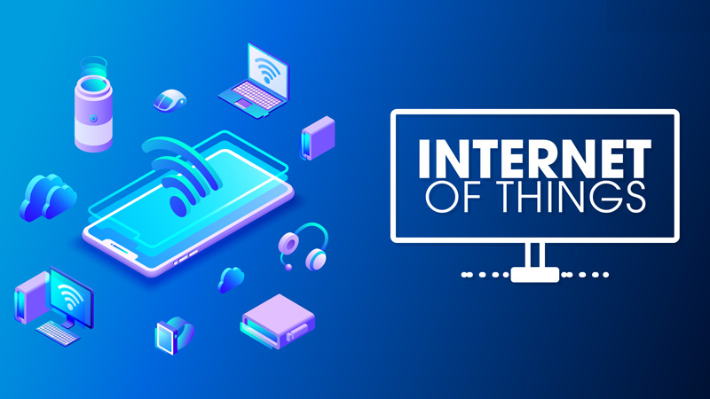

2. IoT và Ứng Dụng Trong Hệ Thống Tản Nhiệt#
2.1 Giới thiệu tổng quan hệ thống IoT#
2.1.1 Giới thiệu#
✍️ Internet vạn vật (IoT) là mạng lưới kết nối các thiết bị vật lý, phương tiện, con người và các đối tượng khác được nhúng với các cảm biến, phần mềm và kết nối mạng để thu thập và trao đổi dữ liệu. IoT có tiềm năng to lớn để thay đổi cách thức chúng ta sống, làm việc và tương tác với thế giới xung quanh.

2.1.2 Tại sao IoT lại quan trọng như vậy?#
✍️ Trong vài năm qua, IoT đã trở thành một trong những công nghệ quan trọng nhất của thế kỷ 21. Giờ đây, chúng ta có thể kết nối các vật dụng hàng ngày—thiết bị nhà bếp, ô tô, máy điều nhiệt, thiết bị giám sát trẻ em—với Internet thông qua các thiết bị nhúng, nên có thể thực hiện giao tiếp liền mạch giữa con người, quy trình và mọi thứ.
Bằng phương tiện điện toán chi phí thấp, đám mây, dữ liệu lớn, phân tích và công nghệ di động, vật chất có thể chia sẻ và thu thập dữ liệu với sự can thiệp tối thiểu của con người. Trong thế giới siêu kết nối này, hệ thống kỹ thuật số có thể ghi lại, giám sát và điều chỉnh từng tương tác giữa những thứ được kết nối. Thế giới vật chất gặp gỡ thế giới kỹ thuật số—và chúng hợp tác với nhau.

2.1.3 Ưu và Nhược điểm của IoT#
😍 Ưu điểm:
Nâng cao hiệu quả hoạt động: IoT giúp tự động hóa các quy trình thủ công, thu thập dữ liệu thời gian thực và đưa ra quyết định dựa trên dữ liệu, từ đó nâng cao hiệu quả hoạt động trong nhiều lĩnh vực.
Tiết kiệm năng lượng và chi phí: IoT giúp tối ưu hóa việc sử dụng năng lượng, giảm thiểu lãng phí và tiết kiệm chi phí vận hành trong nhiều lĩnh vực như nhà thông minh, thành phố thông minh, sản xuất thông minh, v.v.
Cải thiện chất lượng cuộc sống: IoT mang đến các tiện ích và dịch vụ mới, giúp nâng cao chất lượng cuộc sống trong nhiều lĩnh vực như chăm sóc sức khỏe, giáo dục, giải trí, v.v.
Tạo ra các dịch vụ mới: IoT mở ra cơ hội phát triển các dịch vụ mới dựa trên dữ liệu, đáp ứng nhu cầu ngày càng đa dạng của người dùng.
Nâng cao năng lực cạnh tranh: Doanh nghiệp áp dụng IoT có thể nâng cao năng lực cạnh tranh bằng cách tăng hiệu quả hoạt động, giảm chi phí và tạo ra các dịch vụ mới.
Tăng cường khả năng thích ứng với môi trường: IoT giúp thu thập dữ liệu về môi trường và đưa ra các dự báo, hỗ trợ con người thích ứng với các thay đổi môi trường.
🥹 Nhược điểm:
An ninh mạng: Các thiết bị IoT có thể bị tấn công mạng, dẫn đến rò rỉ dữ liệu và ảnh hưởng đến an ninh mạng.
Bảo mật dữ liệu: Việc thu thập và sử dụng dữ liệu cá nhân cần được thực hiện một cách minh bạch và có trách nhiệm để đảm bảo bảo mật dữ liệu.
Tính tương thích: Các thiết bị IoT từ các nhà sản xuất khác nhau cần có khả năng tương tác với nhau để tạo ra hệ thống IoT thống nhất.
Khả năng mở rộng: Hệ thống IoT cần có khả năng mở rộng để đáp ứng nhu cầu ngày càng tăng.
Quyền riêng tư: Việc thu thập và sử dụng dữ liệu cá nhân cần được thực hiện một cách minh bạch và có trách nhiệm để đảm bảo quyền riêng tư của người dùng.
Năng lực nguồn nhân lực: Cần có đội ngũ nhân lực có trình độ để triển khai và vận hành hệ thống IoT.
2.1.4 Ứng dụng của IoT: Nâng tầm cuộc sống#
🏠 Nhà thông minh: Điều khiển từ xa (bật/tắt đèn, điều chỉnh nhiệt độ,…), tự động tưới cây, tự động điều chỉnh ánh sáng, giám sát an ninh,…
🏢 Thành phố thông minh: Hệ thống đèn tín hiệu thông minh, quản lý giao thông hiệu quả, giảm tắc nghẽn và ô nhiễm, hệ thống cảm biến theo dõi chất lượng không khí, nước, cảnh báo ô nhiễm và xử lý kịp thời, hệ thống thông minh tối ưu hóa việc sử dụng năng lượng, tiết kiệm chi phí và bảo vệ môi trường….
🌾 Nông nghiệp thông minh: Hệ thống tưới nước thông minh dựa trên độ ẩm đất, tiết kiệm nước và tối ưu hóa năng suất, hệ thống bón phân theo nhu cầu cây trồng, giảm chi phí và tăng hiệu quả, hệ thống cảm biến theo dõi tình trạng cây, phát hiện sâu bệnh và đưa ra giải pháp kịp thời….
🧠 Sản xuất thông minh: Hệ thống thông minh theo dõi và điều khiển dây chuyền sản xuất, đảm bảo hiệu quả và chất lượng, hệ thống phân tích dữ liệu dự đoán lỗi máy móc, hệ thống thông minh tối ưu hóa quy trình, nâng cao hiệu quả và năng suất…
2.2 Ứng dụng của IoT trong hệ thống tản nhiệt#
Internet of Things (IoT) đã mang lại sự tiện lợi và hiệu suất cao cho nhiều lĩnh vực, và hệ thống tản nhiệt không phải là ngoại lệ. Sự kết hợp giữa IoT và hệ thống tản nhiệt mang lại khả năng theo dõi, kiểm soát và tối ưu hóa hiệu suất tản nhiệt một cách thông minh và tự động. Dưới đây là một số ứng dụng của IoT trong hệ thống tản nhiệt
2.2.1 Theo dõi và giám sát từ xa#
Cảm biến IoT có thể được sử dụng để theo dõi các thông số quan trọng như nhiệt độ, độ ẩm, áp suất, và dòng chảy chất làm lạnh trong hệ thống tản nhiệt. Dữ liệu này có thể được truy cập từ xa thông qua kết nối internet, cho phép người quản lý kiểm soát hiệu suất của hệ thống mọi lúc, mọi nơi.
2.2.2 Tối ưu hóa hiệu suất hoạt động#
Dựa trên dữ liệu từ các cảm biến, hệ thống IoT có thể phân tích và đưa ra các đề xuất để tối ưu hóa hoạt động của hệ thống tản nhiệt. Điều này có thể bao gồm việc điều chỉnh cài đặt hoạt động, tăng hoặc giảm công suất tản nhiệt, hoặc thậm chí là cải thiện hệ thống cách nhiệt.
2.2.3 Dự đoán và phòng ngừa hỏng hóc#
Phân tích dữ liệu từ cảm biến có thể giúp trong việc dự đoán các vấn đề tiềm ẩn hoặc hỏng hóc trong hệ thống tản nhiệt. IoT có thể cung cấp cảnh báo sớm để ngăn chặn sự cố và giảm thiểu thời gian ngừng hoạt động không mong muốn.
2.2.4 Tích hợp với hệ thống quản lý toàn diện#
Dữ liệu từ hệ thống tản nhiệt có thể được tích hợp vào các hệ thống quản lý toàn diện (ví dụ: hệ thống quản lý tòa nhà hoặc hệ thống tự động hóa công nghiệp). Điều này giúp tối ưu hóa hiệu suất của toàn bộ hệ thống và giảm thiểu sự lãng phí năng lượng.
2.2.5 Tương tác và điều khiển tự động:#
Hệ thống tản nhiệt có thể được điều khiển tự động dựa trên các thông số đo được từ cảm biến IoT. Các thiết bị thông minh có thể thay đổi cài đặt hoạt động theo thời gian thực để đáp ứng nhu cầu thay đổi của hệ thống.